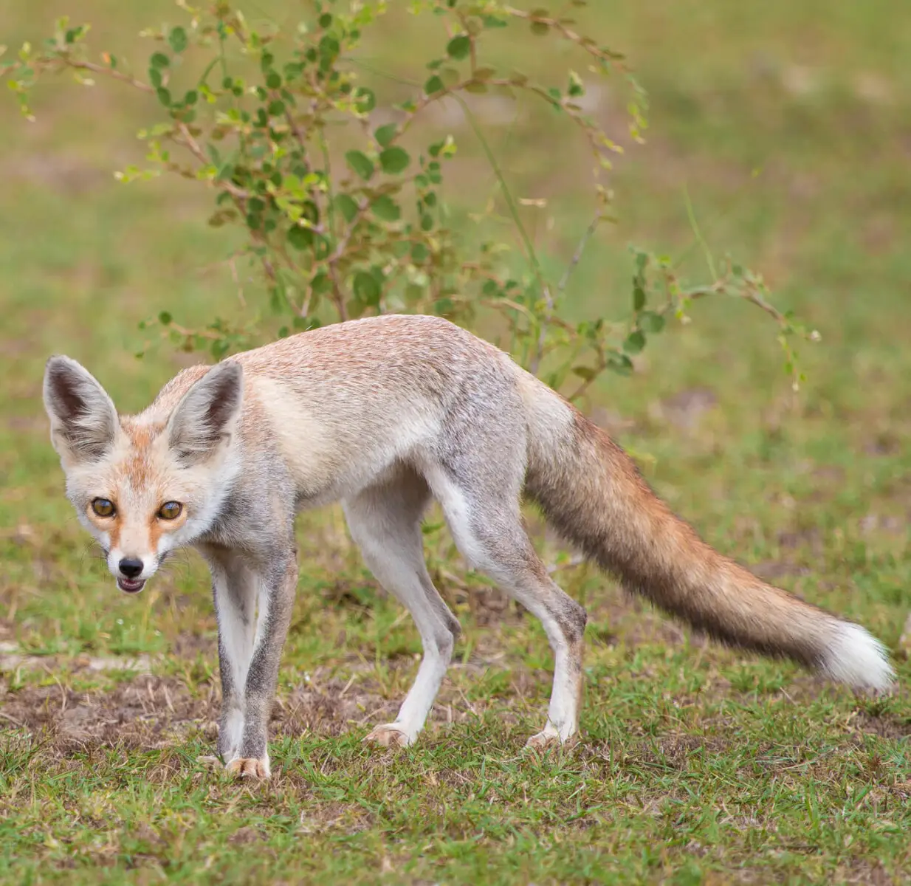
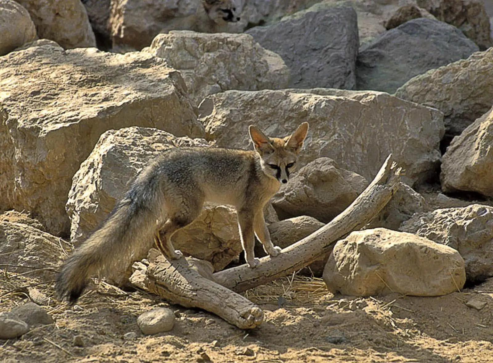

The Blanford's fox inhabits areas of Central Asia, along with the Middle East. It lives alongside the Corsac fox. countries it's found in are Saudi Arabia, Iran, Afghanistan, the United Arab Emirates, and the Sinai Peninsula (which is part of Egypt).
The Blanford's fox eats a wide variety of foods, such as beetles, grasshoppers, Caperbush, and dates. In agricultural areas, they have been known to eat grapes and melons. Occasionaly, they will eat vertebrates, though usually not many at a time. Their diet makes it so that they don't have to drink water that often, and they drink water close to never.
Unliked other fox species that can live up to 10 years in the wild, the Blanford's foxes' lifespan is only 4-5 years in the wild, however, they can live longer in captivity.
The Blanford's fox was named after William Blanford, who discovered the species in 1877. The Blanford's fox can also be called the white-footed fox.


Photo by unknown from unknown
Photo by unknown from unknown